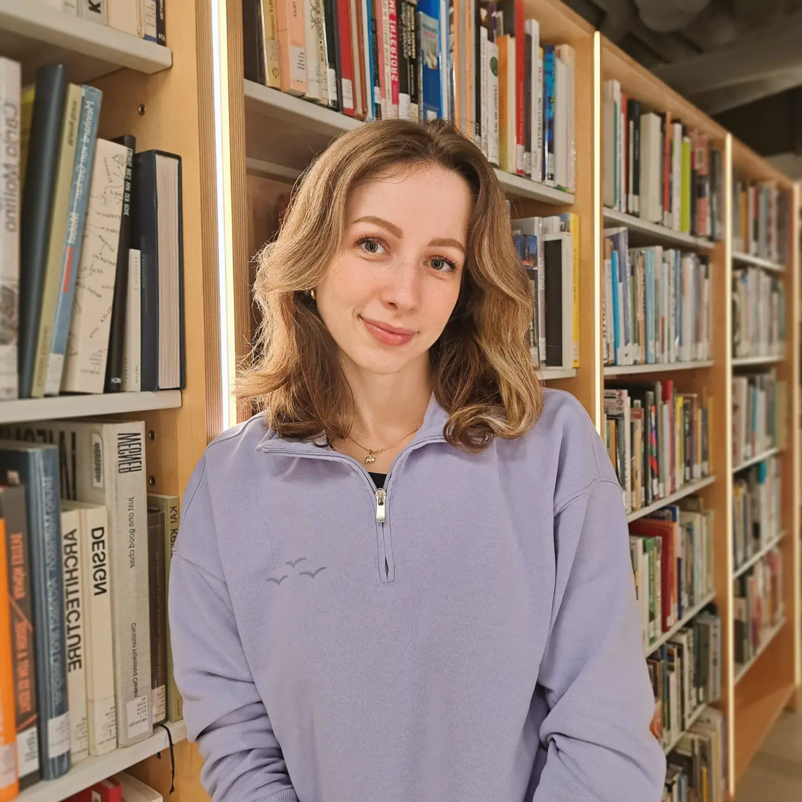
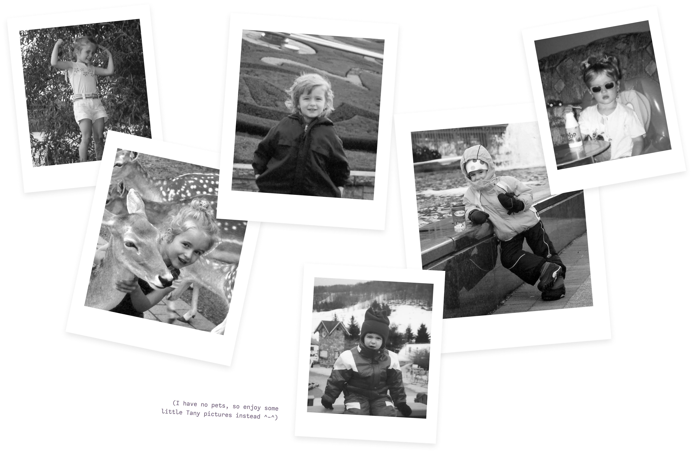
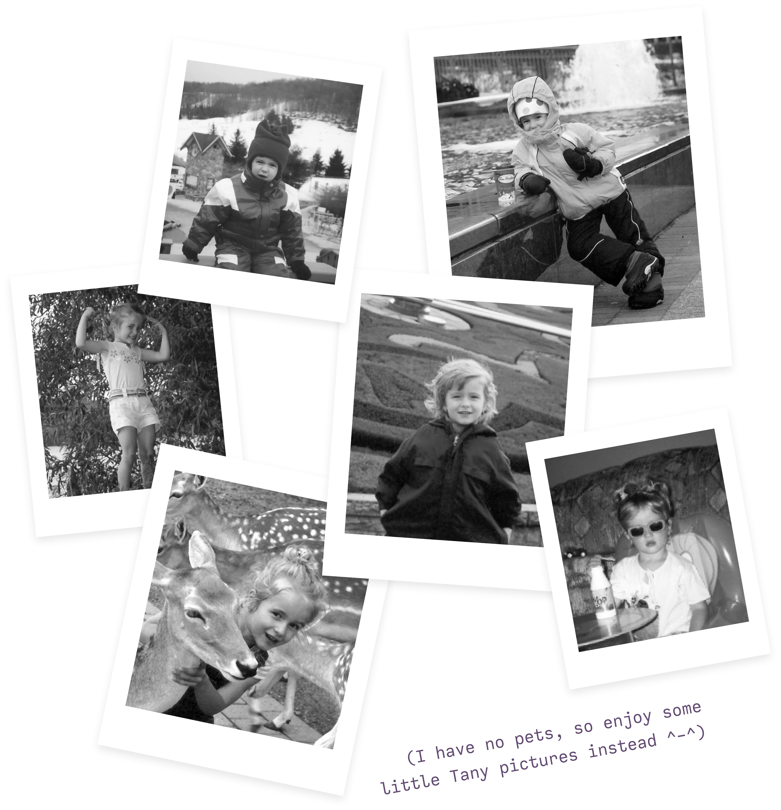

⁕ Hello there!
I'm Tany (pronounced 'tah-nee'), a Canada-based designer and master's candidate studying UX & service design at Munster Technological University (Ollscoil Teicneolaíochta na Mumhan). I've spent the last seven years messing around with various fields of design, from creating custom typefaces and voxel modelling, to experimenting with game design and holograms.
To me, learning is everything. As a lifelong academic, I'm always going down Google rabbitholes of how things are done and how different softwares work. The curiosity to know more and be able to do more is what drives me to keep designing — keep experimenting, keep testing out new ideas, keep making, just keep doing.
+ Cyberpunk enthusiast
+ Enjoys green tea & cheese
+ Ambient music & EDM
To me, learning is everything. As a lifelong academic, I'm always going down Google rabbitholes of how things are done and how different softwares work. The curiosity to know more and be able to do more is what drives me to keep designing — keep experimenting, keep testing out new ideas, keep making, just keep doing.
+ Cyberpunk enthusiast
+ Enjoys green tea & cheese
+ Ambient music & EDM


+ Experience
Community & Marketing Designer @ WolfPack Games
Collaborating with the Community & Marketing team to establish guidelines for the studio’s graphical assets, brand visual identity and marketing material for the studio’s external communication channels.
2024 - Present
Graphic Designer @ RW Digital Marketing Agency
Developing engaging multimedia content for the agency’s social media platforms. Enhancing brand growth strategies via analytics and impactful design. Designing and launching responsive, brand-adherent websites for clients.
2021 - Present
Student Content Designer @ Brock University
2021
Digital Archival Program Assistant @ St. Catharines Museum & Welland Canals Centre
2020
+ Education
Master of Arts in User Experience & Service Design
Munster Technological University (Ollscoil Teicneolaíochta na Mumhan)
2024 - 2025
Bachelor of Arts (Honours)
Brock University
2021 - 2023
Interaction Design
Sheridan College Institute of Technology
2019 - 2021
+ Research
🔒 Revamping Mobile-Assisted Language Learning Apps
Master’s Project/Thesis
In progress...
Signage Design & Wayfinding - Toronto Subway
Undergraduate Thesis
2022 - 2023

